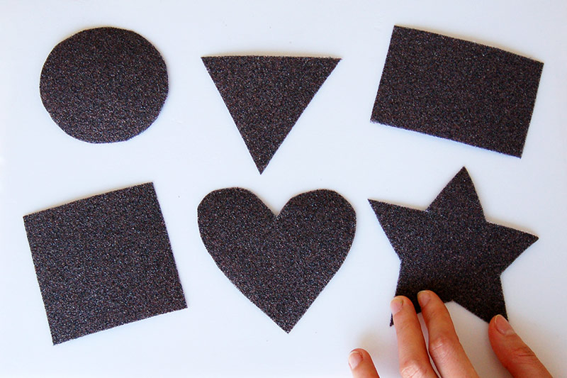

This is the First Division
 click here
click here
Hii My name is Pratiksha Jadhav.I am from Kolhapur.I am in B.E lat year in Santkrupa Institute of Technology,Karad.
There are 4 people in my family,my mother,father and Brother and myself.my father is farmer and my mother is homemaker.my brother is Teacher.
My native place of living is bachani which is placed at Taluka-Karvir,Dist-Kolhapur.
This is my Second Division
Hii My name is Pratiksha Jadhav.I am from Kolhapur.I am in B.E lat year in Santkrupa Institute of Technology,Karad. There are 4 people in my family,my mother,father and Brother and myself.my father is farmer and my mother is homemaker.my brother is Teacher. My native place of living is bachani which is placed at Taluka-Karvir,Dist-Kolhapur.
This is my Third Division
Hii My name is Pratiksha Jadhav.I am from Kolhapur.I am in B.E lat year in Santkrupa Institute of Technology,Karad. There are 4 people in my family,my mother,father and Brother and myself.my father is farmer and my mother is homemaker.my brother is Teacher. My native place of living is bachani which is placed at Taluka-Karvir,Dist-Kolhapur.
 click here
click here